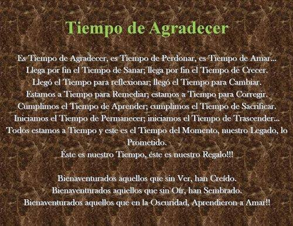
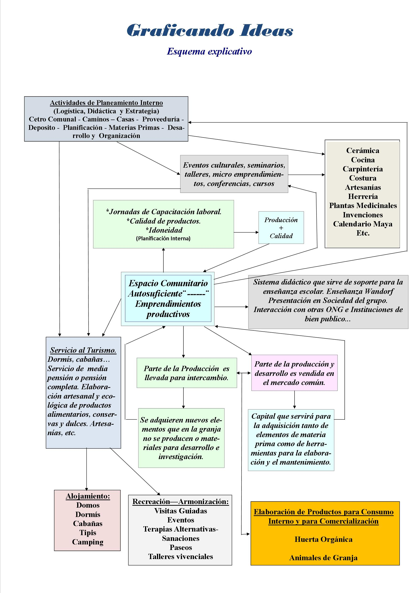
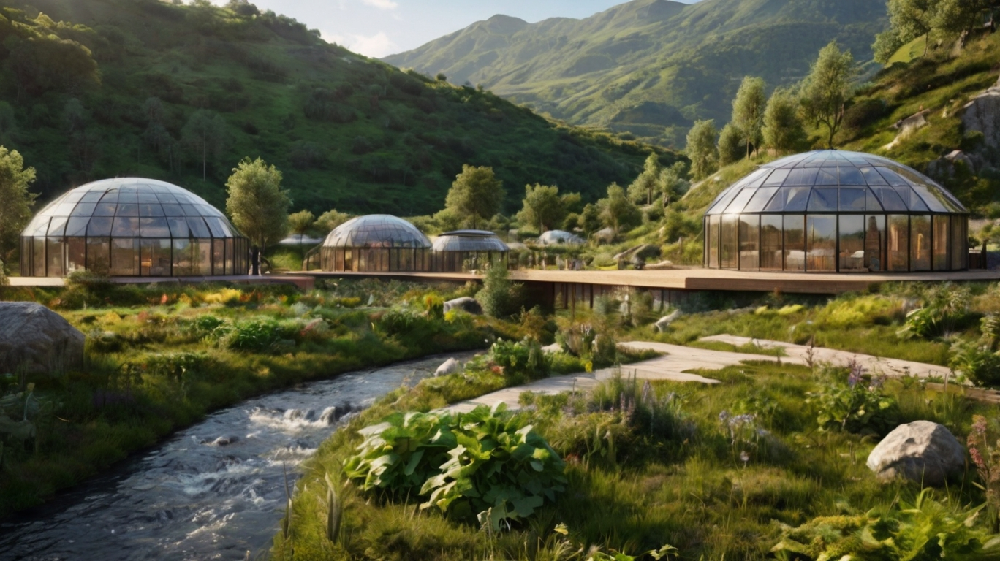
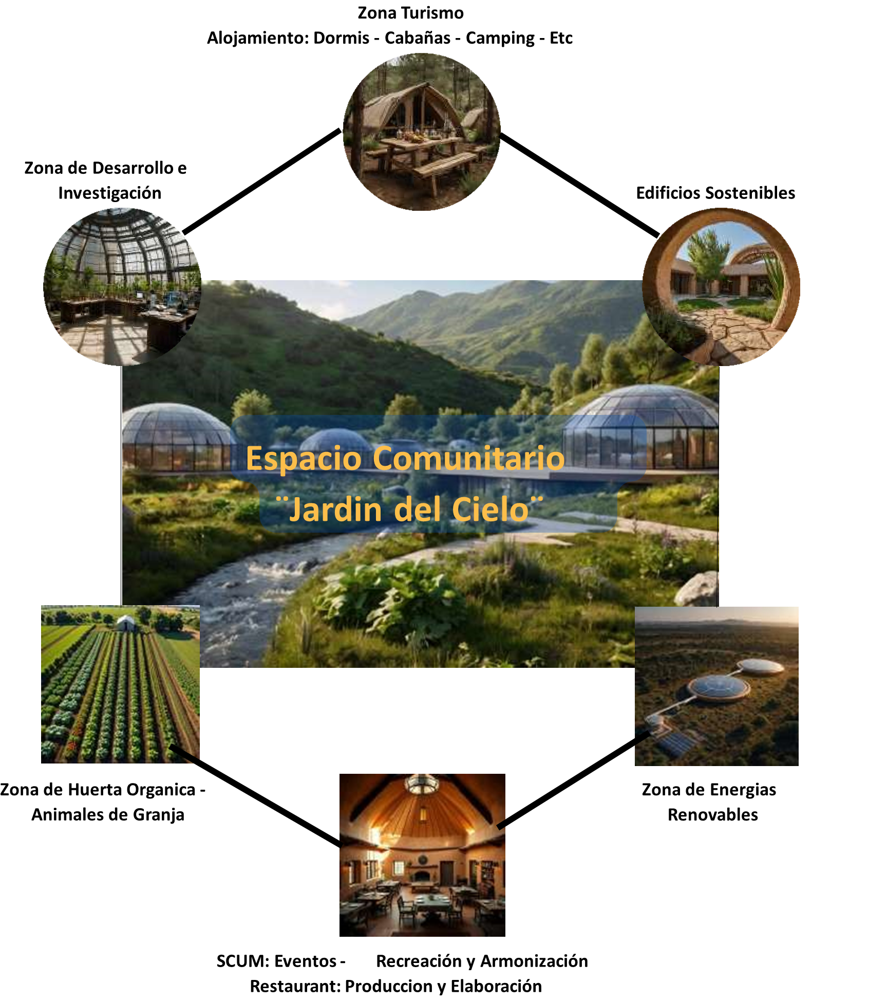
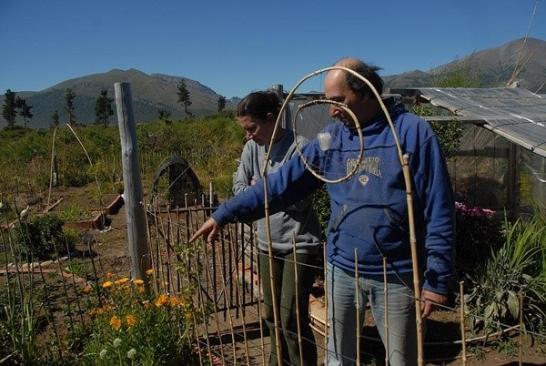
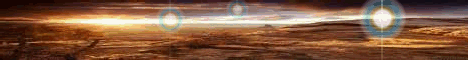

"El único camino que existe, es volver a las Fuentes
donde encontraremos el VERDADERO SENTIDO de la VIDA"
Ser Autosuficiente no es lo mismo que tener Autarquía o conseguir Autosustentabilidad...
La Autosuficiencia abarca todo esto y mucho más, pues se trata de Ti; de Tu Naturaleza, de Tu Búsqueda.
En principio: ¿Qué Buscas?... ¿Buscas un cambio real de Paradigma o solo un cambio dentro de la misma pauta que nos instruyen en esta actualidad?
La única forma de ser Autosuficiente es mediante la búsqueda de la real Libertad y eso implica el respeto de tu Voluntad, de tu Libre Albedrío.
¿Qué necesitas para Vivir y ser Feliz? Ten en cuenta que la Naturaleza te brinda el 100% de todo lo que cuanto hoy disfrutas. Nosotros, como especie, solo transmutamos lo que nos entrega la Madre Tierra. Entonces, ¿por qué eres pobre si la Madre Natura es Abundancia???
Medita todo esto y te darás cuenta que solo tienes miedo de aventurarte a lo que desconoces a causa de tu instrucción cultural, donde un papel hace de intermediario para que accedas o no a lo que necesitas, pero jamás la Madre Naturaleza te cobra un solo cobre por utilizar lo que de Ella es!!
Sé Autosuficiente, sé Libre. Sé uno con El Todo y verás cuán acompañado estarás. Atrévete a traspasar toda barrera que como el Elefante atado no se da cuenta que tiene el potencial de desatarse, de ser Libre!!!!

En el Tiempo de Agradecer, el Tiempo de Perdonar, el Tiempo de Amar...
Llega por fin el Tiempo de Sanar. Tiempo por fin de Comprender. Tiempo de Cambiar.
Entonces el Tiempo de Recordar cuando el Tiempo de Crear.
Cumplimos el Tiempo de Aprender, cumplimos el Tiempo de Servir.
Iniciamos el Tiempo de Renacer, iniciamos el Tiempo de Florecer.
Este es nuestro Tiempo, este es nuestro Regalo!!!
Bienaventurados aquellos que sin Ver, han Creído.
Bienaventurados aquellos que en la Oscuridad, Aprendieron a Amar!!!
¿Quieres profundizar?
Proyectos y técnicas para vivir en armonía con la Naturaleza
Granja Ecológica Didáctica - Espacio Comunitario Autosuficiente
"Imagina un espacio donde la naturaleza, el conocimiento y la comunidad se unen para crear un modelo autosuficiente que inspire a las futuras generaciones."
Esto no es solo un simple proyecto; es un sueño que busca plasmarse en la realidad. Ahi entras Tú: Una granja ecológica diseñada para fomentar la sostenibilidad, la educación integral y la innovación, creando soluciones para un mundo más equitativo y solidario. Nace desde la necesidad de impulsarte en base a un cometido tuyo; interno y rofundo donde no solo sirva como sustento, sino como verdadera opción de convivencia, donde el esfuerzo comunitario sea el cimiento, sea el próposito.
"El único camino que existe, es volver a las Fuentes; donde encontraremos el VERDADERO SENTIDO de la VIDA."
Producción Primaria
Transformación e Intercambio
Conocimiento y Armonía
Las 9 zonas funcionales se interconectan bajo los 3 pilares fundamentales

Esquema que representa la dinámica interna: producción, educación, comunidad, turismo e investigación integrados
Presentación del proyecto Jardín del Cielo

Visión integral del Espacio Comunitario Autosuficiente
Interconexión entre producción, intercambio, turismo e investigación

Flujograma que muestra la dinámica del Espacio Comunitario: desde la planificación interna hasta el intercambio en nodos
Servicios de alojamiento y conexión con la naturaleza en un entorno sustentable.
Espacio dedicado a la experimentación y búsqueda de soluciones innovadoras.
Producción primaria de alimentos orgánicos y crianza responsable de animales.
Sector multifuncional: Eventos, Recreación, Armonización, Terapias + Producción y Elaboración.
Sistemas de energía limpia y autosuficiencia energética para todo el predio.
Construcciones con materiales naturales y técnicas de bioconstrucción ancestrales.

Bariloche2000 - Marzo 2010 (Hace 16 años)
"Todo lo que hicimos fue sin un peso. Esta tierra es virgen. El que quiere y tiene voluntad puede hacer un montón de cosas."
Raúl Rivero y Beatriz Vecchio llegaron de Buenos Aires en 2003 al barrio Unión de Bariloche. Desde 2006 desarrollan su huerta orgánica y taller de costura, participando activamente en la Feria de Intercambio de Semillas y promoviendo la autosuficiencia comunitaria.
"Lo que yo quiero profesar es transmitir con el ejemplo el mensaje que se puede ser autosuficiente. Y la autosuficiencia es participación con la naturaleza. Vos trabajás con la naturaleza y no la naturaleza para vos. En ese proceso aprendés de la naturaleza y ninguno es un esclavo del otro porque vos sos parte de la naturaleza."
— Artículo publicado en Bariloche2000, 15 de Marzo 2010 (Actualmente la nota no esta online)
En Patreon: Texto completo de la nota, fotos originales y reflexión 16 años después
"Ser solidario significa ponerse como parte de un eslabón que forma una gran cadena. El trueque o intercambio es establecer un vínculo que va mucho más allá de una relación circunstancial y económica."
Un Espacio Comunitario como acción directa: Todo lo que se manufacture se expone para trocar o vender según la necesidad: pan casero, dulces, quesos, huevos, pollos, verduras, miel, productos de plantas medicinales, conservas y comidas elaboradas; etc... Algo importante de subrayar: La intension es replicar, formar ¨Nodos¨ de intercambio en todo el Pais y porque no al resto del mundo.
"Si Amo a mi Hermano, Amaré a Dios; si Amo a Dios, Amaré a mi Hermano. Este es el pilar para lograr ser autosuficiente."

"No busco seguidores, busco compañeros de camino. No quiero ser maestro ni gurú.
Necesito acompañamiento, no que me sigan."
Este proyecto está en etapa de propuesta. Es una idea plasmada después de décadas de investigación, sueños y aprendizaje. Nunca pude implementarla solo, y por eso busco:
Nota importante: No ofrezco consultorías ni enseñanzas. Solo comparto una visión y busco quienes quieran caminar juntos hacia un mundo sin dinero, basado en el trueque solidario y la autosuficiencia comunitaria.
El águila es el ave que posee la mayor longevidad de su especie. Llega a vivir 70 años.
Pero para llegar a esa edad, a los 40 años de vida tiene que tomar una seria decisión.
Sus uñas curvas y flexibles, no consiguen agarrar a las presas de las que se alimenta.
Su pico alargado y puntiagudo, también se curva.
Apuntando contra el pecho están las alas, envejecidas y pesadas por las gruesas plumas.
¡Volar es ahora muy difícil!
Entonces el águila tiene sólo dos alternativas:
Morir... o enfrentar un doloroso proceso de renovación que durará 150 días.
Ese proceso consiste en volar hacia lo alto de una montaña y refugiarse en un nido, próximo a una pared, donde no necesite volar.
Entonces, apenas encuentra ese lugar, el águila comienza a golpear con su pico la pared, hasta conseguir arrancárselo.
Apenas lo arranca, debe esperar a que nazca un nuevo pico con el cual después, va a arrancar sus viejas uñas.
Cuando las nuevas uñas comienzan a nacer, prosigue arrancando sus viejas plumas.
Y después de cinco meses, sale victoriosa para su famoso vuelo de renovación y de revivir, y entonces dispone de... 30 años más.
A veces nos preguntamos: ¿Por qué renovarnos?
En nuestra vida, muchas veces, tenemos que resguardarnos por algún tiempo y comenzar un proceso de renovación.
Para que reanudemos un vuelo victorioso, nos debemos desprender de ataduras, costumbres y otras tradiciones del pasado.
Solamente libres del peso del pasado, podremos aprovechar el valioso resultado de una...... "RENOVACIÓN"
"El conocimiento no se posee se comparte; no se compite"
Aquí te comparto ciertos conceptos que me apuntalaron desde jóven y me permitió ser resiliente, constante, perseverante, hasta rebelde te diré; lo intento profesar no solo con lo dicho sino forzar el intento, logran recorrer ese trecho. Como verás, para que entiendas que esto es mas que na idea o un capricho para algunos; todo esto comenzó finales de la decada de los ´90. Házte una idea, ya tengo 62 años. Todo conocimiento es una herramienta; el modo de como aplicarlas, hacen la diferencia .
Una reflexión filosófica profunda sobre el cambio de paradigma: de "nacer para morir" a "nacer para crecer y trascender".
"La autosuficiencia no es ser ermitaño, es participar con la Naturaleza como co-creadores."
📖 Leer texto completoEl Espacio Comunitario como acción directa de intercambio solidario. Ser solidario es ponerse como parte de un eslabón que forma una gran cadena.
"El trueque es establecer un vínculo que va mucho más allá de una relación económica."
📖 Leer texto completoArtículo publicado en Bariloche2000 sobre tu experiencia en Unión, Bariloche. "Todo lo que hicimos fue sin un peso. Esta tierra es virgen."
"La autosuficiencia es participación con la naturaleza. Vos trabajás con la naturaleza y no la naturaleza para vos."
📖 Leer artículo completo